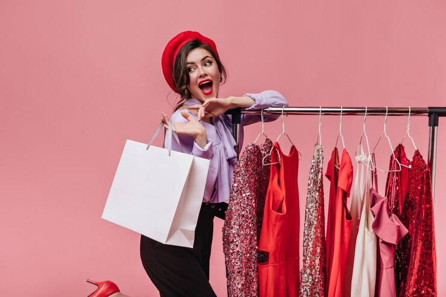

Sobre Nosotros
Fundada en 2005 por un equipo apasionado por la moda, nuestra empresa ha florecido como un referente en la industria de la confección femenina. Desde nuestros modestos comienzos en un pequeño taller, nos hemos comprometido a ofrecer prendas y accesorios que no solo reflejen las últimas tendencias, sino que también celebren la individualidad de cada mujer. Con un enfoque en la calidad y la atención al detalle, cada pieza de nuestra colección es creada con pasión y artesanía. A lo largo de los años, hemos colaborado con diseñadores talentosos y artesanos expertos para ofrecer productos únicos que fusionan elegancia y comodidad. La elección de enfocarnos en la confección de ropa y accesorios surgió de nuestra pasión compartida por la expresión individual a través de la moda. Creíamos que estas prendas y complementos no solo son elementos funcionales del vestir, sino también poderosas herramientas para celebrar la diversidad, la creatividad y la identidad de cada persona.

Nuestra dedicación a la sostenibilidad se refleja en la elección de materiales ecoamigables y prácticas éticas de fabricación. Creemos en empoderar a las mujeres a través de la moda, proporcionando prendas que no solo realzan su belleza exterior, sino que también fomentan la confianza y la autoexpresión. Nuestra visión va más allá de ser una marca de moda convencional; aspiramos a ser agentes de cambio, influenciando positivamente en la sociedad a través de nuestras acciones y colecciones, impulsando así un movimiento hacia una moda más consciente, inclusiva y respetuosa con el medio ambiente. Desde colecciones atemporales hasta las últimas tendencias de la pasarela, cada prenda cuenta una historia de estilo y empoderamiento. A medida que avanzamos, nos comprometemos a seguir inspirando a mujeres de todo el mundo a través de la moda que va más allá de lo superficial, creando un legado de elegancia, ética y autenticidad.
Nuestro objetivo en el trato con el cliente es ofrecer una experiencia de compra excepcional y personalizada. Buscamos establecer conexiones significativas con quienes eligen nuestra marca, brindando atención al cliente de calidad, asesoramiento en moda y un servicio que no solo se limite a la transacción, sino que se extienda a construir relaciones a largo plazo basadas en la confianza, la satisfacción y el compromiso con sus necesidades y preferencias.